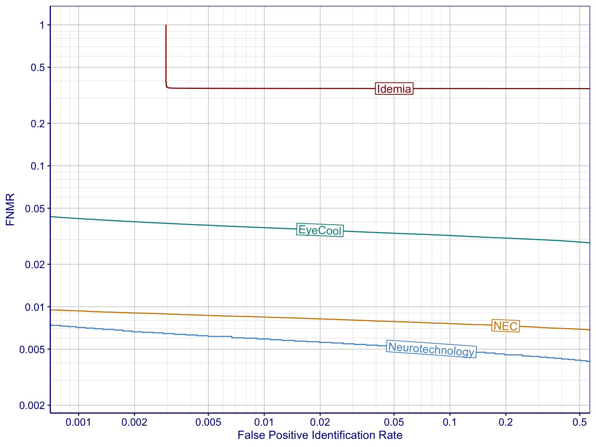

| IREX 10 Homepage | API | FAQ | CONOPS Document |
Core accuracy for the identification task can be characterized by Detection-error trade-off (DET) plots. Generally, curves lower down in a DET plot correspond to more accurate matchers.
| Dataset: | Operational Dataset 4 |
| Samples used: | Both eyes |
| Enrolled Population: | 500K distinct eyes |
| Enrollment Method: | All enrollment sessions per person |
| Number of Mated Searches: | 335 202 |
| Number of Nonmated Searches: | 360 072 |

DET plots do not convey information on the uncertainty of the error metrics. The figure below shows 90% confidence bounds for FNIR at an FPIR of 0.01.
|
Gaithersburg, MD 20899 301-975-2000 | |
| How are we doing? Feedback | |